Geopolitical risk by event type. In September 2026 the AI-GPR index was 179 (2025 average 170); military conflict contributed 88 points (2025 average 63), diplomatic tension 43 and sanctions 13 (2025 average 15.3). Peak since 2022: 319 in March 2022. Source: https://www.matteoiacoviello.com/ai_gpr.html
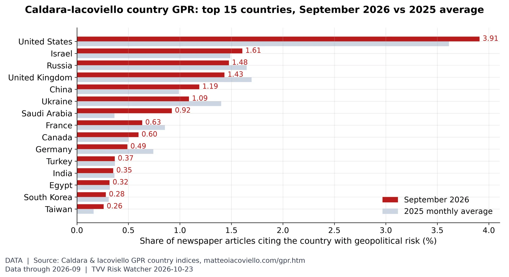
Where geopolitical risk is concentrated. In September 2026, United States (3.91% of articles, vs 3.61% in 2025), Israel (1.61%) and Russia (1.48%) led the Caldara-Iacoviello country GPR rankings. Source: https://www.matteoiacoviello.com/gpr.htm
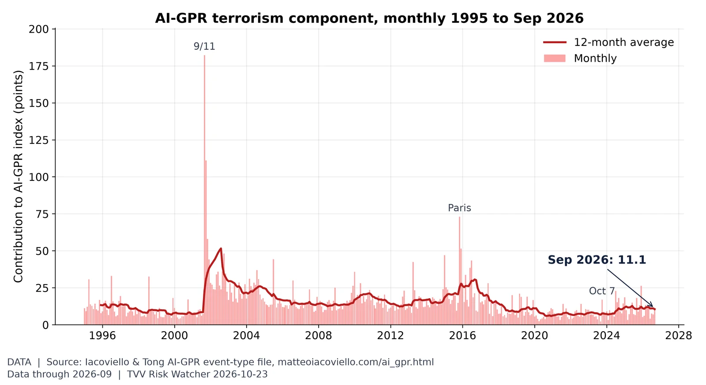
Terrorism share of geopolitical risk. The terrorism component of AI-GPR was 11.1 in September vs 7.0 in August; the 2026 monthly high is 13.3 (March) and the 12-month average is 10.5. Source: https://www.matteoiacoviello.com/ai_gpr.html
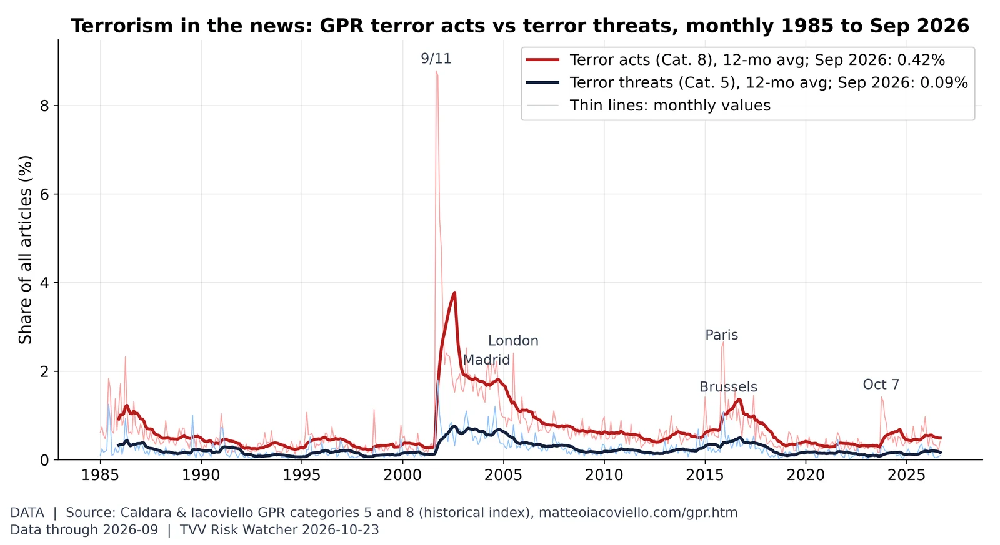
Terror acts vs terror threats. In September 2026, terror-act articles were 0.42% of all articles (2025 average 0.55%) and terror-threat articles 0.09% (2025 average 0.19%), far below the 9/11 peak of 8.8%. Source: https://www.matteoiacoviello.com/gpr.htm
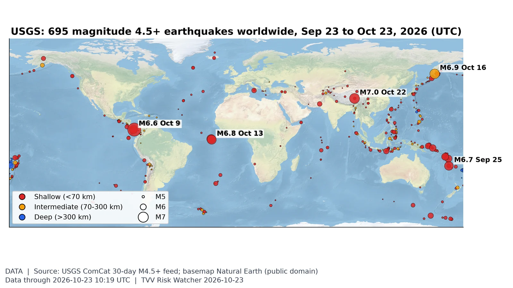
Where the earth shook this month. USGS logged 695 M4.5+ quakes in the 30 days to Oct 23, 14 of them M6+; the largest was M7.7 12 km WSW of Pitaloza Arriba, Panama on Oct 9 (UTC). Source: https://earthquake.usgs.gov/earthquakes/map/
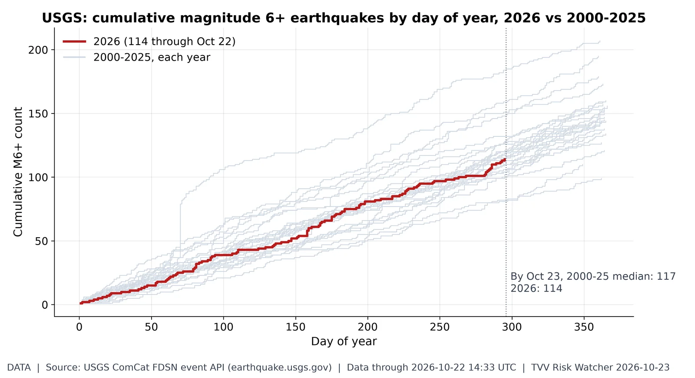
M6+ earthquake pace. 2026 has 114 M6+ quakes through Oct 22 vs a 2000-25 median of 117 by this date (range 81-185). Latest: M7.0 191 km ENE of Nagqu, China (Oct 22, 14:33 UTC). 12 duplicate USGS solution(s) of the same event merged. Source: https://earthquake.usgs.gov/fdsnws/event/1/
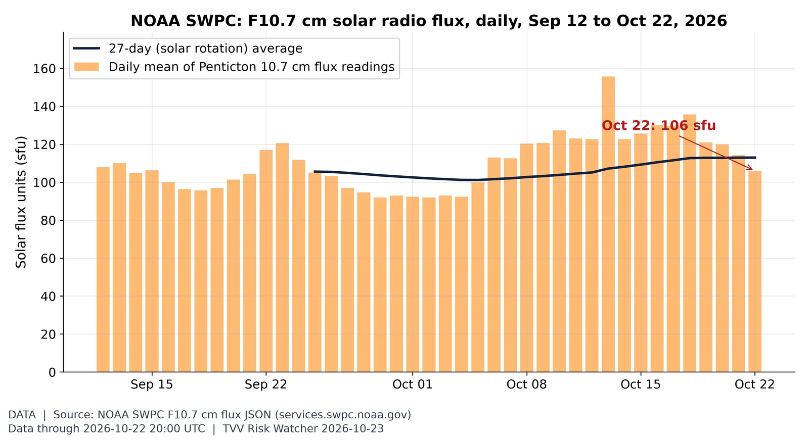
Solar activity proxy: F10.7 flux. The 10.7 cm solar radio flux, a standard proxy for solar activity and upper-atmosphere drag on satellites, was 106 sfu on Oct 22 (27-day average 113; window range 92-156). Source: https://www.swpc.noaa.gov/phenomena/f107-cm-radio-emissions
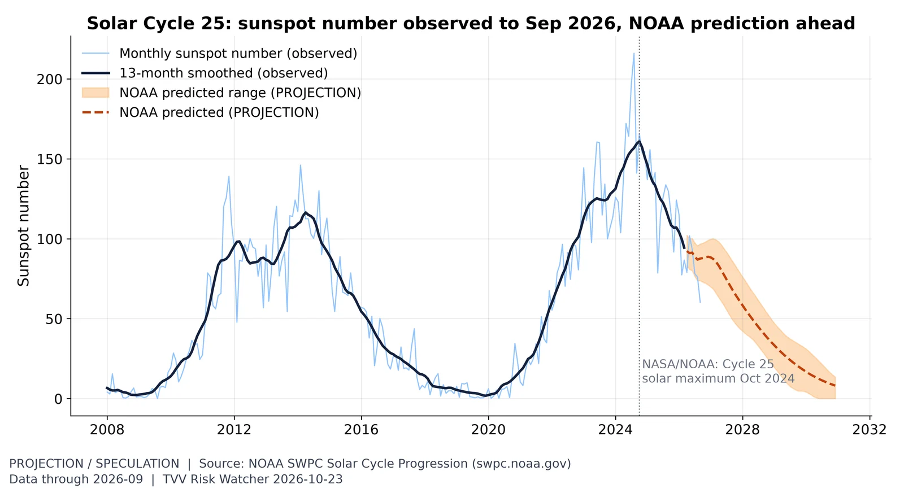
Solar Cycle 25 progression. The monthly sunspot number was 60 in September, past the Oct 2024 maximum; declining phases can still bring large flares and CME storms such as Oct 10's. Source: https://www.swpc.noaa.gov/products/solar-cycle-progression
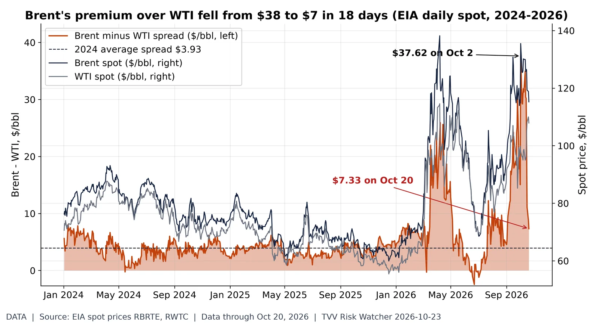
Brent-WTI premium: $38 to $7. EIA daily spot: Brent $115.22, WTI $107.89 on Oct 20, a $7.33 Brent premium, down from $37.62 on Oct 2 (2024 average $3.93). A wide Brent premium signals seaborne (Gulf-exposed) crude scarcity relative to landlocked US supply; the narrowing means that stress has eased on paper even as both prices stay high. Source: https://www.eia.gov/dnav/pet/hist/RBRTED.htm
Yield curve after inversion. The 10Y-2Y spread is +0.31 pt on Oct 22 (Treasury: 10Y 4.96%, 2Y 4.65%), positive after the 2022-24 inversion; un-inversion preceded past recessions. Source: https://fred.stlouisfed.org/series/T10Y2Y
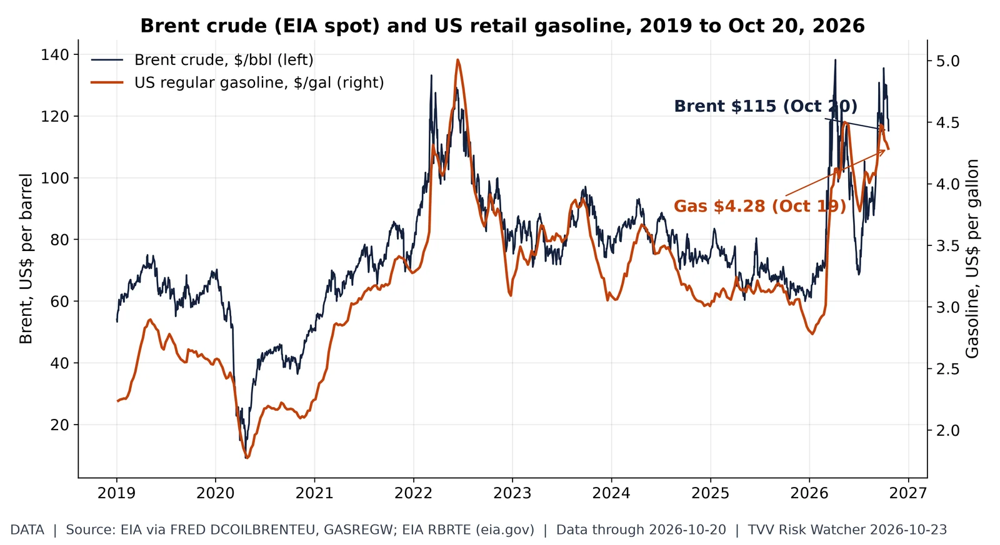
Oil shock at the pump. EIA Brent spot was $115.22 on Oct 20 (period peak $138 in April 2026); EIA's US regular gasoline average was $4.28 in the week of Oct 19. Both EIA series lag the market by about a week. Source: https://fred.stlouisfed.org/series/DCOILBRENTEU
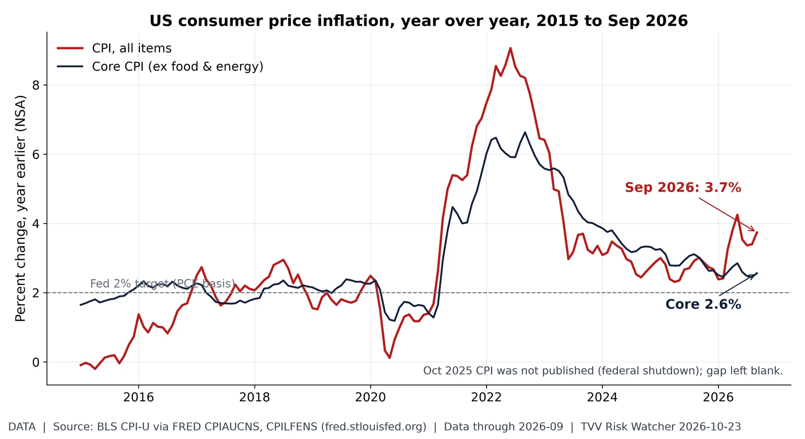
Energy-led inflation gap. Headline CPI was 3.7% year over year in September (from 3.4% in August) while core was 2.6%: energy is driving the gap. Source: https://fred.stlouisfed.org/series/CPIAUCNS
US measles resurgence. NNDSS shows 4,278 US measles cases through MMWR week 41 of 2026, 2.1x all of 2025 (2,026); latest provisional week posted as of 7 AM ET Oct 23. Source: https://data.cdc.gov/NNDSS/NNDSS-Weekly-Data/x9gk-5huc
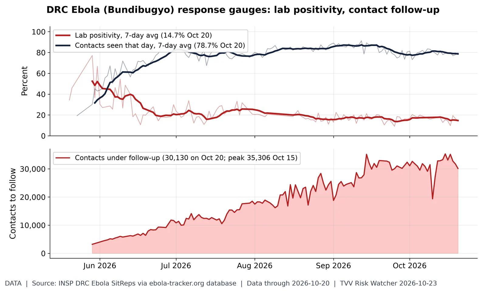
Is the Ebola response keeping up?. INSP SitRep 159 (situation Oct 20): 7-day average lab positivity 14.7% (peak 7-day 52.4% around May 29); 78.7% of listed contacts seen daily (7-day avg); 30,130 contacts under follow-up. Lower positivity and higher follow-up mean better control. SitRep 160 not yet posted at ~7:00 AM ET Oct 23; values as transcribed by ebola-tracker.org from INSP PDFs. Source: https://ebola-tracker.org/en/database/
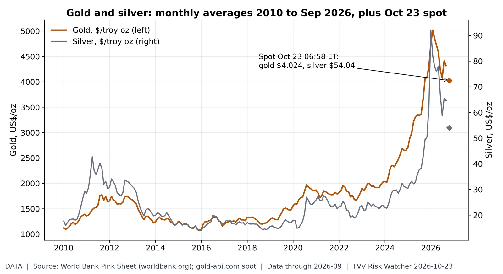
Haven metals. Gold averaged $4,319 in September (2010-26 monthly high $5,020, Feb 2026) and silver $64.60; gold-api.com spot at 06:58 ET Oct 23 is gold $4,024, silver $54.04. Source: https://www.worldbank.org/en/research/commodity-markets
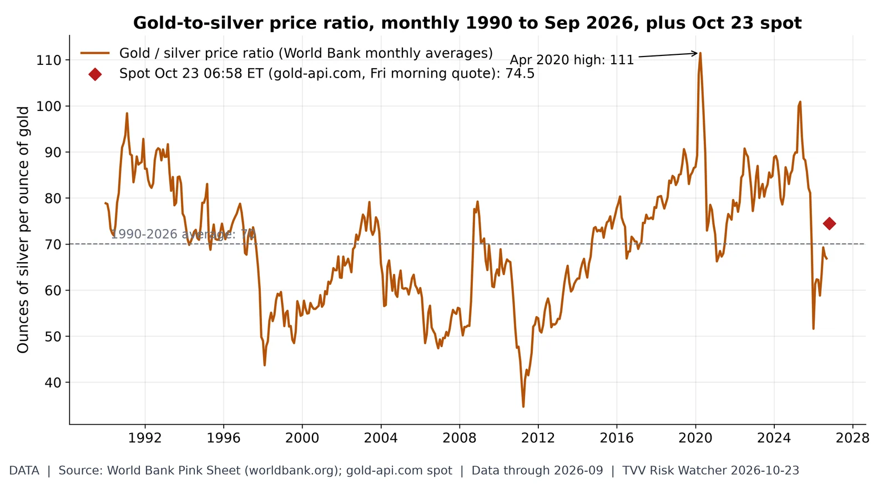
Gold-to-silver ratio. An ounce of gold buys 74.5 ounces of silver at the Friday-morning spot (gold $4,024, silver $54.04), vs 66.9 in September and a 1990-2026 average of 70. Source: https://www.worldbank.org/en/research/commodity-markets
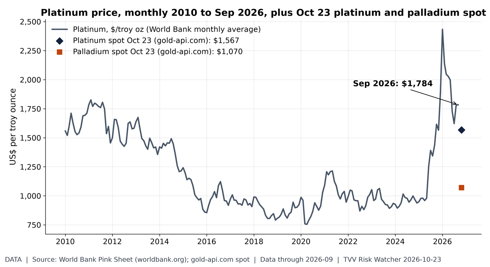
Platinum group metals. Platinum averaged $1,784/oz in September (2010-26 high $2,434, Jan 2026); Oct 23 spot quotes at 06:58 ET are platinum $1,567 and palladium $1,070. Source: https://www.worldbank.org/en/research/commodity-markets
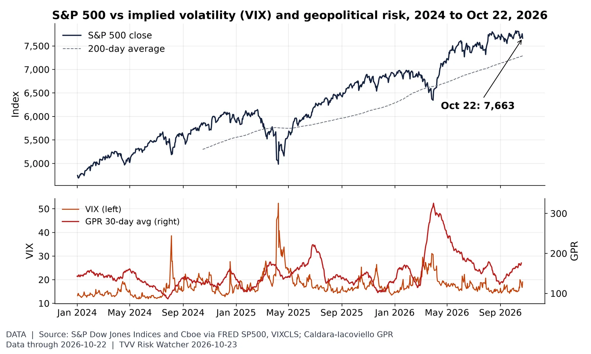
Stocks vs volatility and geopolitical risk. The S&P 500 fell 1.21% to 7,663.43 on Oct 22, +5.2% vs its 200-day average, with VIX at 19.03; the GPR 30-day average was 176 on Oct 19. Source: https://fred.stlouisfed.org/series/SP500
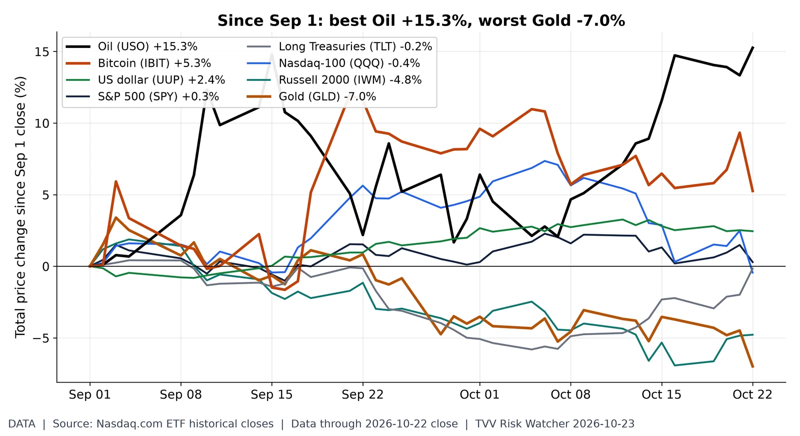
Cross-asset scoreboard since Sep 1. Price change from the Sep 1 close to Oct 22: Oil (USO) +15.3%; Bitcoin (IBIT) +5.3%; US dollar (UUP) +2.4%; S&P 500 (SPY) +0.3%; Long Treasuries (TLT) -0.2%; Nasdaq-100 (QQQ) -0.4%; Russell 2000 (IWM) -4.8%; Gold (GLD) -7.0%. ETF closes (Nasdaq.com), price only, no dividends. Source: https://www.nasdaq.com/market-activity/etf/spy/historical
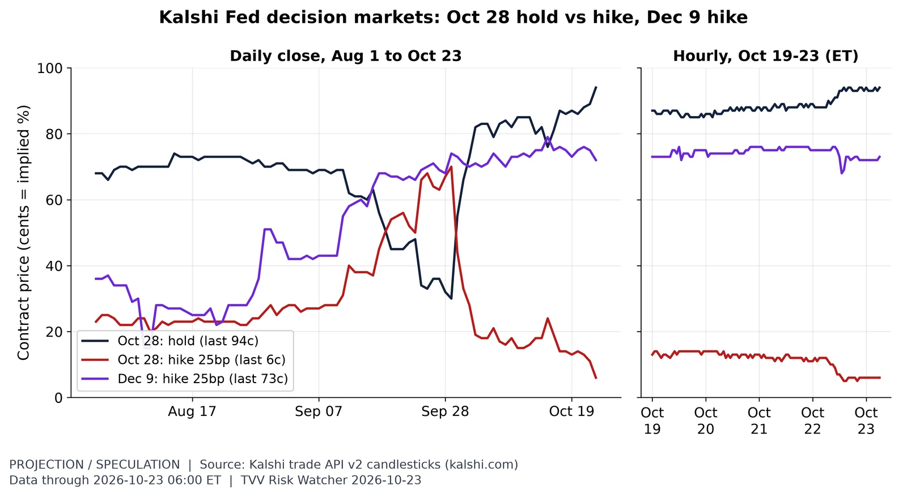
Fed odds five days before the FOMC. Kalshi's Oct 28 hold trades about 94c at 06:00 ET Oct 23, and a Dec 9 hike about 73c: traders see a hold next week with hike risk later. Source: https://kalshi.com/markets/kxfeddecision
FOMC: hold priced, dissents expected. Polymarket ~06:58 ET Oct 23: no change Oct 28 93.5%, 25 bp hike 6.5%. Dissent count: none 24.0%, one 15.5%, two 28.0%, three 18.0%, four+ 12.5% (100 minus the none price implies about 76% odds of at least one dissent; the dissent market is thin, ~$33K volume, and its prices need not sum to 100). Crowd prices, not Fed guidance. Source: https://polymarket.com/event/fed-decision-in-october-20260617190323537
Summit talk vs summit odds. Polymarket ~07:00 ET Oct 23: Trump, Putin and Zelensky meet together before 2027 9%; seen together before 2027 8%; Putin and Zelenskyy do not meet at all by end-2027 78%. The meet-before-2027 price ranged 4.0-9.5% in October despite Kremlin talk of trilateral talks in mid-November. Thin markets ($60K-$108K volume); crowd prices, not forecasts. Source: https://polymarket.com/event/trump-putin-and-zelensky-meet-together-before-2027
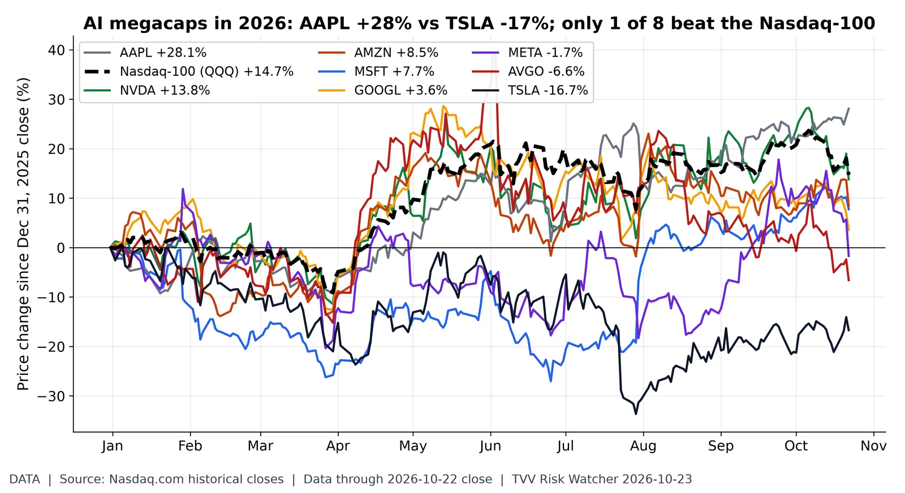
AI megacaps split. Price change Dec 31, 2025 to Oct 22 close: AAPL +28.1%; NVDA +13.8%; AMZN +8.5%; MSFT +7.7%; GOOGL +3.6%; META -1.7%; AVGO -6.6%; TSLA -16.7%; Nasdaq-100 (QQQ) +14.7%. 1 of the 8 beat the index. Nasdaq.com closes, price only. Source: https://www.nasdaq.com/market-activity/stocks/nvda/historical